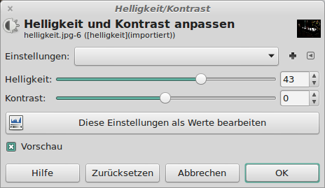
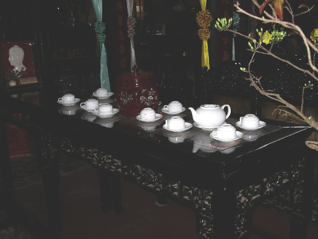
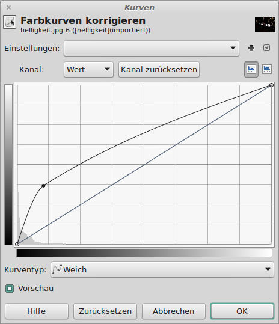

Ein unterbelichtetes Bild aufhellen
Um unterbelichtete Bilder aufzuhellen, ist unter Farben → Kurven
das Histogramm des Bildes zu sehen. Das Histogramm kann nun über Punkte angepasst werden.
Das folgende Bild ist deutlich zu dunkel geraten, obwohl es mit einem Blitz fotografiert wurde.
| Abb. 1: Das unterbelichtete Originalbild |
Hier das Histogramm des Bildes vor der Bearbeitung:
 |
| Abb. 2: Das Histogramm des Originals |
Die in vielen Bildbearbeitungsprogrammen vorhandene Funktion der Helligkeitsanpassung bringt leider nicht
den gewünschten Effekt. In GIMP wird die Helligkeit über
Farben → Helligkeit/Kontrast angehoben:
|  |
| Abb. 3: Das Werkzeug zum Anpassen der Helligkeit |
Und so sieht das (bescheidene) Ergebnis aus. Das Bild wirkt wie mit einem Schleier überzogen.
|  |
| Abb. 4: Das Bild nach dem Anheben der Helligkeit. |
Im Histogramm erkennt man, dass sich die Kurve lediglich nach rechts verschoben hat:
 |
| Abb. 5: Das Histogramm nach dem Anheben der Helligkeit |
Besser ist es, die Kurve im linken (dunklen) Bereich etwas anzuheben:
|  |
| Abb. 6: Aufhellung der dunklen Stellen |
Das Ergebnis sieht dann so aus:
 |
| Abb. 7: Das nun aufgehellte Bild |
© 2009-2017 Michael Roppel